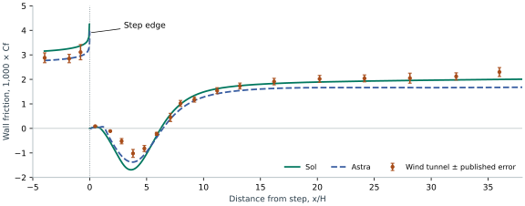

Week 1 of AI Engineering Analysis Against Test Data
Sol vs Astra on OpenFOAM
How solver time changed agreement with a backward-facing-step wind-tunnel experiment
Read the PDFDownload the scoring dataInspect all 20 stations
Abstract
I gave GPT-6.2 Sol and GPT-6.2 Astra the same upstream flow targets and asked each to design and operate an OpenFOAM simulation. I scored their sealed predictions against Driver and Seegmiller’s wind-tunnel measurements. At two hours, Astra placed six of 20 wall-friction predictions inside the published error bars and Sol placed five. They succeeded at entirely different stations. With additional solver time and each setup held fixed, Sol reached ten stations and Astra stayed at six. Only three successes overlapped. Sol also predicted where the flow reattached to within 0.26% of the measured distance. Astra ran 2.72% long, met its stopping rule sooner, and finished with slightly lower root-mean-square wall-friction error. The choice of observable and stopping time both affected the comparison.

Experiment and numerical method
What each operator knew and chose
The wind-tunnel reference
Driver and Seegmiller measured a turbulent boundary layer flowing over a backward-facing step. The abrupt expansion creates a recirculating pocket behind the step. Their oil-film measurement placed mean reattachment 6.26 ± 0.10 step heights downstream for the straight opposite-wall configuration [1, 2]. The reference dataset supplies signed skin friction and a published error at each of 20 lower-wall stations.
The numerical step height H was 12.7 mm. The domain extended from x/H = −130 to +50, with the roof at y/H = 9 and the upstream floor at y/H = 1. The target approach speed was 44.2 m/s, giving a step-height Reynolds number of about 36,000. The upstream targets also specified a boundary-layer thickness of 1.5 H and momentum-thickness Reynolds number of 5,000.
Independent setup and separation of test data
Each GPT-6.2 operator received the common upstream-only brief in a fresh context at high reasoning effort, a ceiling of 150,000 cells, four CPU cores and two hours for setup, inlet calibration, recovery and solution. The brief omitted the measured wall friction and reattachment distance. Dedicated solver containers had networking disabled. The evaluator verified both prediction manifests before opening the experimental table. An earlier shared-setup replay had produced identical station classifications, including five successes each. The independent runs tested what changed when each operator chose the setup.
Both selected OpenFOAM Foundation 10 simpleFoam, a steady incompressible solver, with two-dimensional Reynolds-averaged flow, k–ω SST turbulence closure and a mesh intended to resolve the near-wall velocity gradient. Both imposed no slip on the solid walls. Their mesh, inlet fitting, convection schemes and stopping rules differed.
| Design or outcome | GPT-6.2 Sol | GPT-6.2 Astra |
|---|---|---|
| Cells / downstream wall-normal resolution¹ | 149,400 / 56 | 141,312 / 64 |
| Inlet calibration variables | Speed, thickness, intensity | Speed, thickness; intensity fixed at 0.5% |
| Production convection | First-order upwind after divergence | Higher-order momentum after upwind startup |
| Convergence sampling interval | 50 SIMPLE iterations | 25 SIMPLE iterations |
| Initial residual limits (p / U, k, ω) | 10⁻⁵ / 10⁻⁶ | 10⁻⁴ / 10⁻⁵ |
| Achieved approach speed (target 44.2 m/s) | 48.62 m/s | 44.41 m/s |
| Achieved δ₉₉/H (target 1.5) | 1.698 | 1.511 |
| Achieved Reθ (target 5,000) | 7,706 | 6,023 |
¹ Wall-normal cells in the downstream block between the lower floor and step-lip elevation. Achieved inlet quantities are from the continued runs.
Sol’s higher-order attempt diverged. After an operator prompt flagged an unphysical approach speed and requested recovery, Sol used first-order upwind convection and reduced relaxation. Astra used upwind convection during initialization and restored its higher-order momentum scheme for production. The two scored workflows therefore include different numerical recovery decisions.
Results
The time limit changed which run came closer
At the original cutoff both runs still missed at least one convergence criterion. I restarted each archived case with its production mesh, inlet, physics, schemes and relaxation fixed. Each received up to two more hours on four cores, with early stopping under its own original rule. This tests how additional iterations affected each existing solution.
| Observable | Sol, 2 h | Astra, 2 h | Sol, final | Astra, final |
|---|---|---|---|---|
| Scored iteration | 5400 | 5150 | 17400 | 5900 |
| Stations within error | 5/20 | 6/20 | 10/20 | 6/20 |
| Aggregate absolute error | 39.06% | 17.66% | 15.49% | 17.15% |
| RMS error in Cf | 0.000814 | 0.000322 | 0.000317 | 0.000310 |
| Reattachment, xᵣ/H | 5.3176 | 6.4176 | 6.2438 | 6.4303 |
| Reattachment error | -15.05% | +2.52% | -0.26% | +2.72% |
The friction coefficient Cf is signed wall shear divided by reference dynamic pressure. The scorer interpolated the curves separately on each horizontal wall. A hit requires |prediction − measurement| ≤ the station’s published error. Aggregate absolute error is 100 × Σ|prediction − measurement| / Σ|measurement|. RMS error is the square root of the mean squared station residual, in dimensionless Cf units.
Did they make the same errors?
| Paired station outcome | At two hours | After continuation |
|---|---|---|
| Both within error | 0 | 3 |
| Both miss on same side | 5 | 7 |
| Both miss on opposite sides | 4 | 0 |
| Only Sol within error | 5 | 7 |
| Only Astra within error | 6 | 3 |
The three final shared hits occurred at x/H = −0.804, 7.090 and 11.196. All seven shared misses fell below the experimental intervals. At the 11 stations beyond measured reattachment, Astra fell below every central measurement and Sol fell below seven. This directional count includes values inside the error bars. Sol changed category at eight of the 20 stations during continuation. Astra changed category at none.
What the stopping rules captured
Astra ran about 11½ additional minutes. Reattachment varied by only 0.00416 H over its final 200 iterations, and it satisfied its complete stopping rule. Sol ran almost two additional hours. Its flux, friction-change and reattachment checks passed, but its two velocity residuals and turbulent kinetic-energy residual exceeded its 10⁻⁶ threshold. The final three scheduled samples retained all classifications for each run. Sol’s longer-term behavior remains unmeasured.
Cost, interpretation and limitations
What did the extra accuracy cost?
The tunnel put reattachment at 79.50 ± 1.27 mm downstream of the step. Sol predicted 79.30 mm, about 0.21 mm short using unrounded distances. Astra predicted 81.66 mm, about 2.16 mm long. Sol placed four more friction predictions inside the published intervals. Astra’s slightly smaller RMS friction error shows how counting hits and measuring the magnitude of misses can favor different runs.
| Resource, both stages combined | Sol | Astra |
|---|---|---|
| Uncached input tokens | 366,946 | 178,659 |
| Cached input tokens | 46,671,360 | 14,825,984 |
| Output tokens | 91,852 | 42,083 |
| Estimated tokens at first cutoff | $3.10 | $6.83 |
| Estimated tokens through continuation | $6.32 | $9.04 |
| Allocated core-hours | 15.985 | 8.769 |
Token costs use the recorded dedicated operator sessions from proposal through continuation, at standard API-equivalent rates per million uncached input, cached input and output tokens [3]. Those rates were $2, $0.10 and $10 for Sol, and $8, $0.40 and $40 for Astra. The estimate excludes shared evaluation and publication work. Allocated core-hours equal four reserved cores multiplied by elapsed hours. Actual CPU utilization, invoice charges and the local machine’s hourly cost were unavailable.
Sol’s estimated token spend was $2.72 lower (30.1%), while its solver allocation was 7.22 core-hours higher. At a common rate of $0.10 per allocated core-hour the combined estimates are $7.92 for Sol and $9.92 for Astra. At $0.50 they are $14.31 and $13.43. The break-even rate is $0.377 per allocated core-hour. The experiment provided the same resource ceilings, but the operators spent different amounts.
Attribution and limits
Both runs used the same solver family and closure. Their different outcomes establish sensitivity to the realized workflows. They do not isolate a defect in OpenFOAM, the evaluation harness, either language model, or the SST closure. Sol’s final upstream momentum-thickness Reynolds number exceeded target by 54%, and Astra’s by 20%. The extended mesh checks also flagged low-determinant cells for Sol and high-aspect-ratio cells for Astra. Inlet mismatch, mesh resolution and numerical diffusion are plausible contributors. Assigning a fraction of the error to any one would require changing it alone and repeating the comparison.
This is one public experiment and one independently configured case per operator. Nearby stations sample the same flow. The operator contexts were fresh and the predictions sealed, but prior familiarity with a public benchmark cannot be excluded. The evaluator knew the reference experiment. The recovery prompt and differing convergence rules also limit generalization.
Conclusion
Continuing the frozen setups reversed the ranking by friction-station hits. Sol finished closer on reattachment and aggregate absolute friction error at lower estimated token cost. Astra met its stopping rule sooner, used less solver compute and had the smaller RMS friction error. The station-level comparison shows exactly where the two workflows agreed, and why a single accuracy percentage would hide part of the result.
Appendix · data and references
Station-by-station evidence
Each signed residual below is (prediction − measurement) divided by that station’s published error. A value of −2 means the prediction fell two error-bar half-widths below the measured center. A check mark denotes a prediction within the interval, scored before rounding.
| x/H | Measured 1,000 × Cf ± error | Sol residual | Astra residual |
|---|---|---|---|
| -3.956 | 2.880 ± 0.202 | +1.36 | -0.54 ✓ |
| -1.804 | 2.850 ± 0.171 | +2.38 | +0.04 ✓ |
| -0.804 | 3.110 ± 0.311 | +0.84 ✓ | -0.50 ✓ |
| 0.484 | 0.090 ± 0.014 | -3.43 | -4.53 |
| 1.804 | -0.110 ± 0.019 | -23.65 | -17.16 |
| 2.804 | -0.520 ± 0.109 | -7.85 | -5.54 |
| 3.804 | -1.020 ± 0.163 | -4.02 | -2.17 |
| 4.804 | -0.820 ± 0.123 | -2.97 | -2.01 |
| 5.882 | -0.220 ± 0.062 | -1.19 | -2.37 |
| 7.090 | 0.450 ± 0.167 | +0.71 ✓ | -0.38 ✓ |
| 7.978 | 1.020 ± 0.122 | -0.25 ✓ | -1.92 |
| 9.196 | 1.180 ± 0.106 | +1.55 | -0.43 ✓ |
| 11.196 | 1.540 ± 0.123 | +0.66 ✓ | -0.99 ✓ |
| 13.196 | 1.730 ± 0.121 | +0.11 ✓ | -1.53 |
| 16.196 | 1.910 ± 0.134 | -0.58 ✓ | -2.08 |
| 20.196 | 2.020 ± 0.141 | -0.90 ✓ | -2.52 |
| 24.136 | 2.040 ± 0.143 | -0.77 ✓ | -2.63 |
| 28.130 | 2.050 ± 0.205 | -0.45 ✓ | -1.89 |
| 32.196 | 2.120 ± 0.148 | -0.94 ✓ | -3.07 |
| 35.994 | 2.300 ± 0.184 | -1.64 | -3.41 |
References and research materials
- D. M. Driver and H. L. Seegmiller. “Features of a Reattaching Turbulent Shear Layer in Divergent Channel Flow.” AIAA Journal 23(2), 163–171 (1985). doi:10.2514/3.8890.
- Turbulence Modeling Resource. Backward-Facing Step validation case. Geometry, reference conditions and lower-wall friction data.
- OpenAI. Standard API pricing. Run-specific rates and recorded token counts are preserved in the archive.
Download the scoring archive for the common brief, both proposals, the original and continued prediction curves and hashes, experimental table, station transitions, stopping plan and cost calculation. The archive supports rescoring both endpoints. This independently published report compares against the peer-reviewed experiment in reference 1.
The final flow fields
The 15-second animation traces motion through each final steady velocity field. The changing tracer positions visualize the computed field; they do not represent time-resolved vortex shedding.